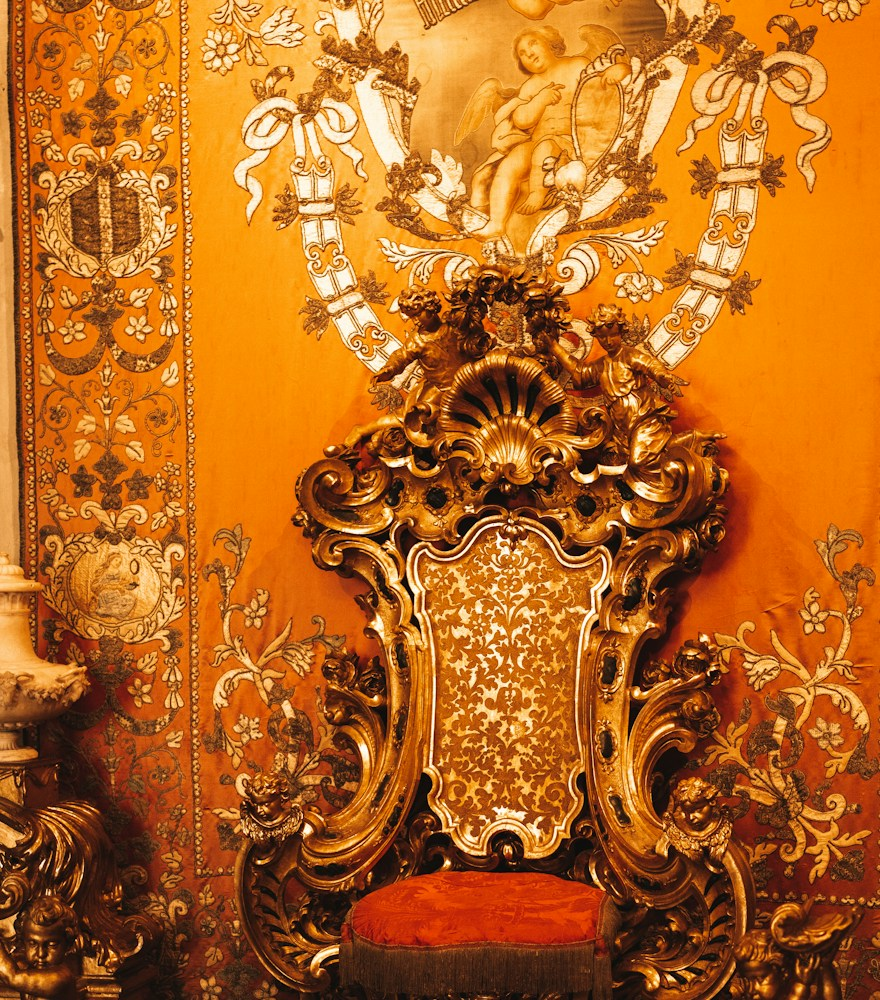

01/07
01/07
Passada a eleição
Quem
governa
o seu Instagram?
A eleição passou. E o trono do seu perfil continua vazio.
Arrasta
@agenciaadullam

01/07
Quem
governa
o seu Instagram?
A eleição passou. E o trono do seu perfil continua vazio.